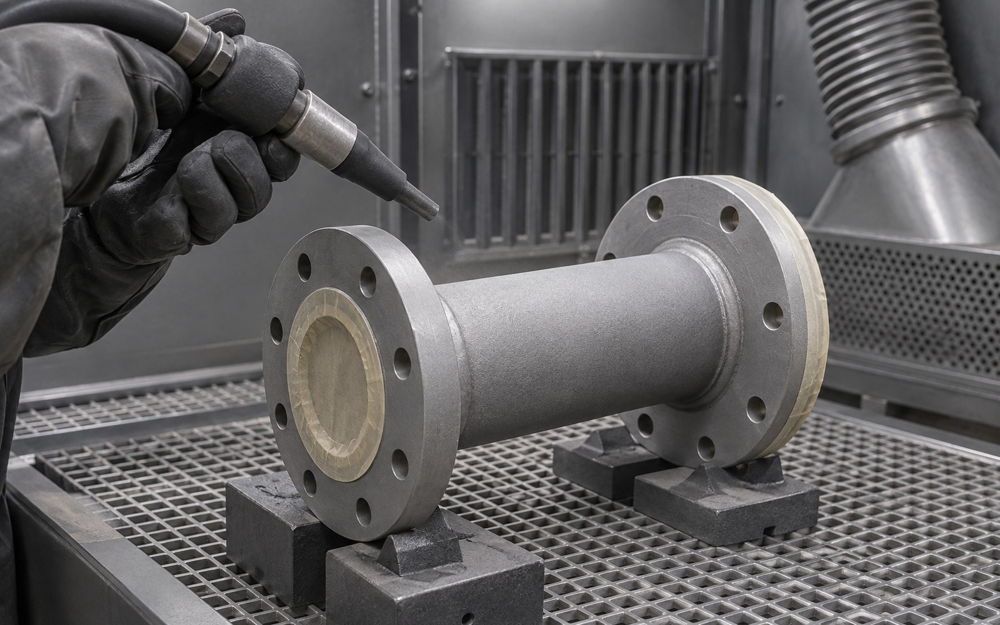
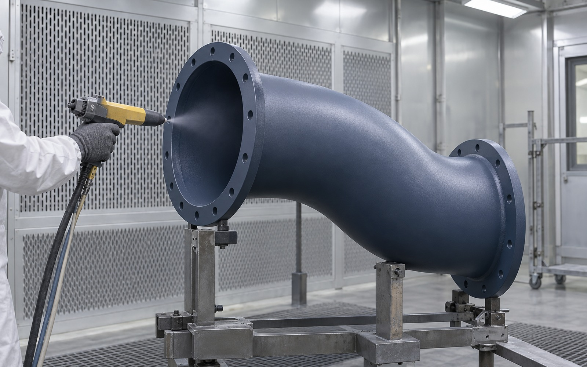
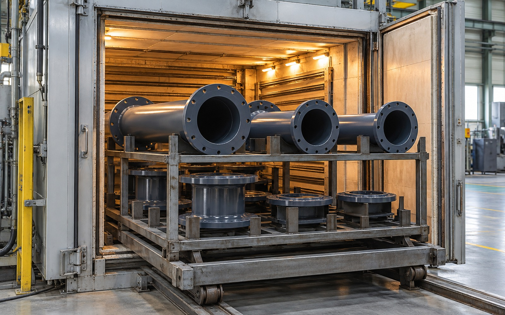
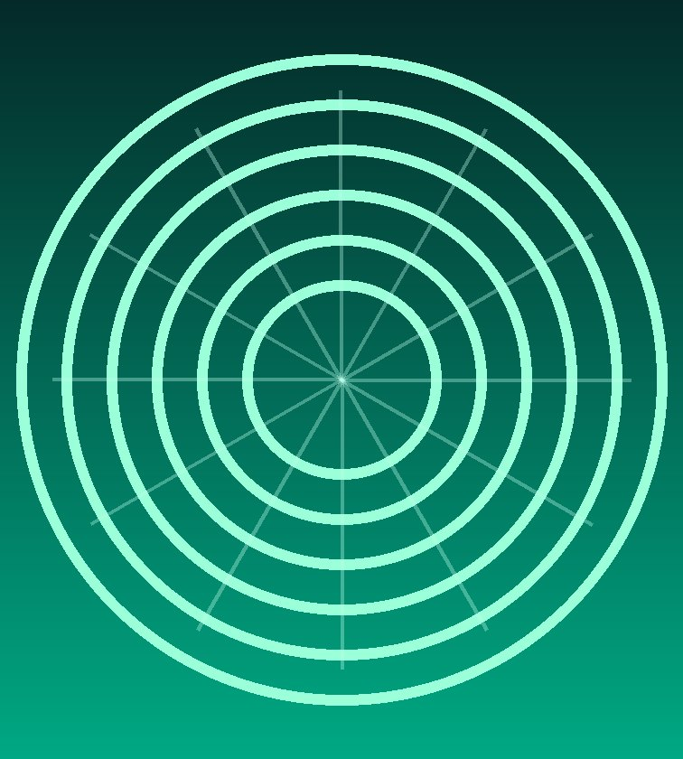
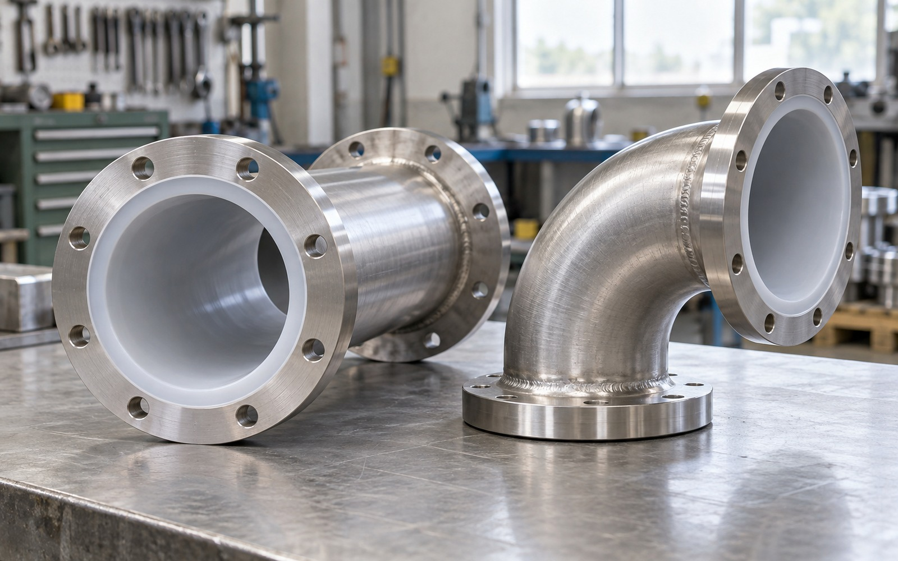
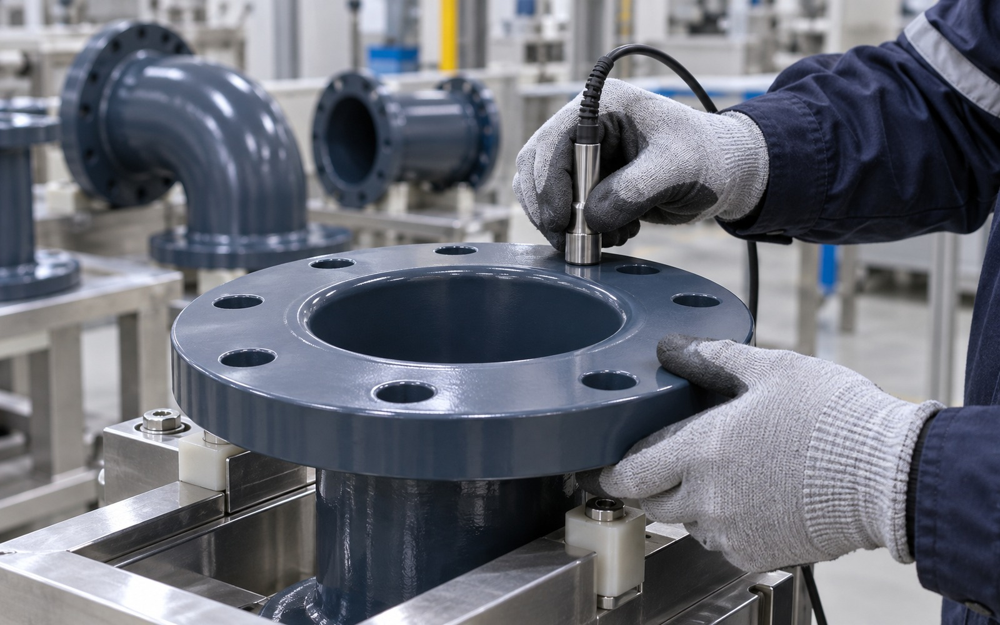
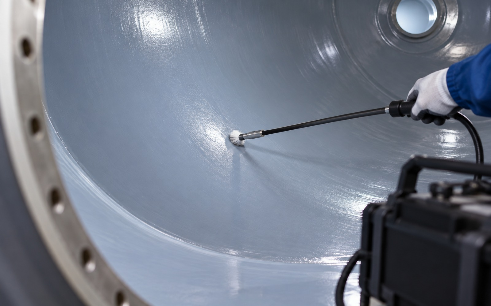
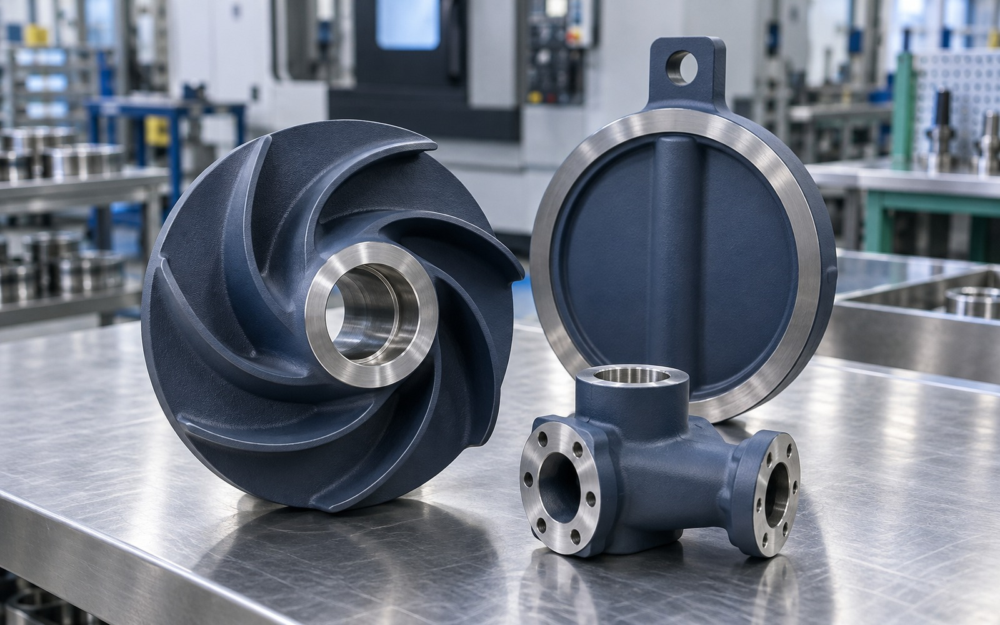
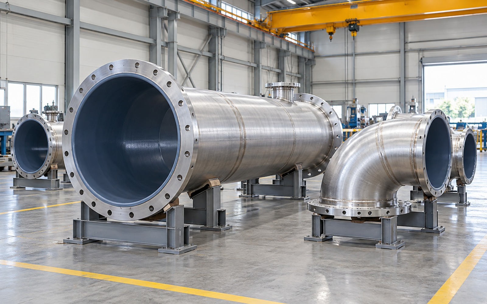

설비 조건에 맞춘 전처리와 코팅
모재와 사용환경에 따라 전처리, 도막 두께, 경화 조건을 관리해 균일한 표면 품질을 확보합니다.
- 부식성 약품, 온도, 세정 방식과 접촉 시간을 기준으로 수지 계열 선정
- 표면의 비점착성과 내약품성, 마찰 특성을 사용 목적에 맞춰 검토
- 모재 형상과 변형 가능성을 고려해 적용 공정과 치구를 결정




설비 수명을 연장하는 고내구성 코팅·라이닝 기술을 제공합니다. FLOVEX는 공정 분석과 디지털 설계, 제작, 시공, 유지보수를 하나의 책임 있는 체계로 연결합니다.
약품과 고온, 반복 세정에 노출되는 설비의 사용 조건을 분석해 적합한 불소수지 코팅과 라이닝을 적용합니다.
모재와 사용환경에 따라 전처리, 도막 두께, 경화 조건을 관리해 균일한 표면 품질을 확보합니다.



외관과 두께, 핀홀, 접착 상태를 검사하고 공정 기록을 관리해 납품 품질을 명확하게 확인합니다.



부품 교체주기와 세정 조건을 고려한 코팅 솔루션으로 설비 정지시간과 유지관리 부담을 줄입니다.



접촉 약품과 사용 온도, 요구되는 마찰·비점착 특성을 함께 검토해 제품과 설비 부품에 적합한 불소수지 계열과 도막 구성을 결정합니다.


모재 세정과 표면 조도 형성, 도포와 경화 조건을 공정표로 관리하고 형상이 복잡한 부품도 취약 구간이 남지 않도록 작업 순서를 설계합니다.